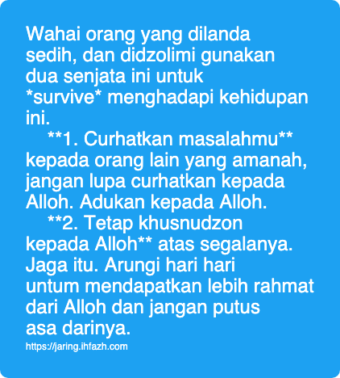

Kunci Ya'qub tidak gila
Lanjutan pembahasan 2025-03-13_0903 Duhai, Alangkah sedihnya aku karena Yusuf, Nabi Ya'qub alaihis salaam melakukan sebab sebab sehingga beliau tidak terpuruk dalam kesedihannya tan menjadi linglung seperti sebagian orang ketika mendapat tekanan yang berat.
Ada dua hal yang Alloh kisahkan tentang beliau:
-
Nyelehke masalah dengan menumpahkan aduan kepada Sang Maha Kuasa
-
Berperasangka baik dan tidak putus asa dari rahmat Alloh
Alloh berfirman tentang beliau:
قال إنما أشكو بثي و حزني إلى الله و أعلم من الله مالا تعلمون
Beliau berkata, sunggu aku hanya mengadukan kesusahan dan kesedihanku kepada Alloh. Dan aku mengetahui perkara yang tidak kalian ketahui.
Perhatikan!
Beliau mengadukan. Bahasa kita curhat. Tidak beliau pendam sendiri. Beliau curahkan segala rasa sedih dan kesusahan yang dihadapi karena musibah ini kepada selain dirinya.
Tujuan curhat ini antara lain adalah menaruh beban supaya tidak berat di hati dia. Dan dia bisa mendapatkan solusi. Mendapatkan bantuan. Paling tidak, kepalanya plong. Tapi, perlu diperhatikan. Cari orang yang tidak ember dalam masalah ini. Bukan jadi solusi, tapi api permasalahan semakin membara dan menyebar.
Nabi Ya'qub memberikan contoh bahwa sebaik baik tempat mengadu adalah Alloh. Dan beliau hanya mengadu kepada Alloh. Ucapan beliau tidak hanya ucapan, namun juga praktek yang beliau lakukan.
Point kedua adalah berperasangka baik kepada Alloh, bahwa Alloh akan menyelesaikan masalah ini. Berperasangka baik bahwa Alloh akan membalas kedzoliman seorang. Disadari atau tidak disadari olehnya. Bereperasangka baik bahwa ini adalah pelajaran hidup yang Alloh berikan kepada dia untuk menjadi lebih baik dan lebih mulia di dunia sebelum di akherat. Berperasangka baik bahwa Alloh akan membuka siapa yang salah dan siapa yang benar. Bila ada kesalahan di madzlum, Alloh akan bimbing dia untuk bertaubat dan mengakui kesalahan tersebut. Berperasangka baik dengan segala macamnya.
Alloh berfirman ttg ya'qub
يابني اذهبوا فتحسسوا من يوسف و أخيه
Wahai anak anakku, pergi sana, cari Yusuf dan Saudaranya.
Bahkan beliau sampai berperasangka baik kepada Alloh bahwa Alloh akan mengumpulkan mereka semua. Ya Binyamin yang baru saja terpisah, dan yusuf yang sudah bertahun tahun lamanya tidak diketahui kabarnya.
ولا تيأسوا من روح الله إنه لا ييأس من روح الله إلا القوم الكافرون
Dan jgnlah kalian berputus asa dari rahnat Alloh. Sungguh, tidak ada yang berputus asa dari rahmat Alloh kecuali orang orang yang kufur.
Kafir ni'mat Alloh, apa lagi kafir terhadap syareat Alloh.
Wahai orang yang dilanda sedih, dan didzolimi gunakan dua senjata ini untuk survive menghadapi kehidupan ini.
**1. Curhatkan masalahmu** kepada orang lain yang amanah, jangan lupa curhatkan kepada Alloh. Adukan kepada Alloh.
**2. Tetap khusnudzon kepada Alloh** atas segalanya.
Jaga itu. Arungi hari hari untum mendapatkan lebih rahmat dari Alloh dan jangan putus asa darinya.